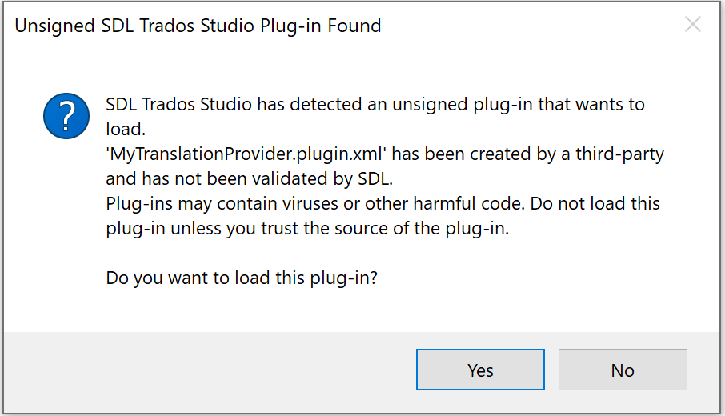
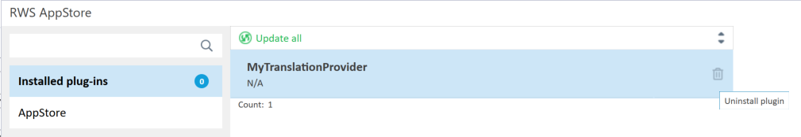

Plug-in Deployment
This guide explains how to deploy, update, and uninstall a Plug-in Package (*.sdlplugin) for use in Trados Studio. It provides step-by-step instructions to ensure a smooth process for developers.
How to Install a Plug-in Package
- Locate the plug-in package file (*.sdlplugin) on your system.
- Double-click the file to launch the installation wizard.
- Follow the on-screen instructions to complete the installation.
Note
During development, you can configure the output path of the project to point to %AppData%\Trados\Trados Studio\19\Plugins\Packages\. This is already configured if you created the project with one of the project templates available in the Trados Studio SDK here. For more information on this, see Setting up a Developer Machine.
When Trados Studio starts, you may see the following warning message:

To prevent this warning, submit your plug-in package to RWS for verification. Send an email to app-signing@sdl.com with a link from where the plug-in can be downloaded for verification. Once the verification is complete, you will receive an email with a download link where you can obtain the signed version of the plug-in. After signing, the warning will no longer appear.
Once Trados Studio has started, go to the Tools > Plug-ins dialog and notice that "MyPlugin" is now listed as a plug-in and is ready to be used.
Steps to Update a Plug-in Package
- Open the plug-in package manifest and increase the version number.
- Save the changes and rebuild the plug-in package.
- Double-click the updated plug-in package to launch the installation wizard.
- Start Trados Studio. The application will detect the updated plug-in package, verify it, extract its contents into %AppData%\Trados\Trados Studio\19\Plugins\Unpacked\, and load it.
Note
Make sure to update the version number in the plug-in manifest; failing to do so will prevent the update from being applied.
How to Uninstall a Plug-in Package
To uninstall a plug-in, choose one of the following methods:
Using the Plugin Manager:
- Open the Plugin Manager installed with Trados Studio.
- Select the plug-in you want to uninstall and follow the prompts.
Using RWS AppStore Integration:
- Open Trados Studio and navigate to the RWS AppStore Integration.
- Locate the plug-in and uninstall it.
